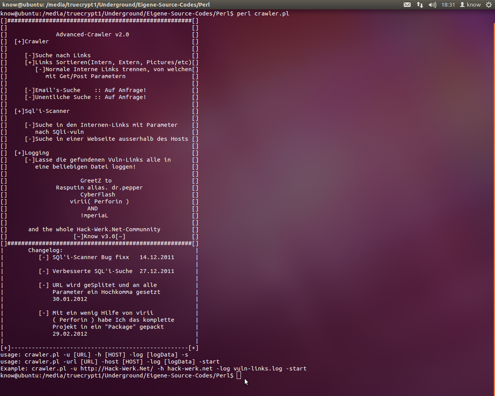

[+]Topic: Tools
[+]By: Knowlegend
[+]Return: Tools
Simple and easy to use webcrawler with SQLi finder.

--> Download Crawler <--
--> Download Perl Modul <--
Crawler code
#!C:\Perl\bin\perl
use warnings;
use strict;
use Getopt::Long;
use WebSec;
my ($q, $url, $host, $logfile);
print
"[]#####################################################[]
[] []
[] Advanced-Crawler v2.0 []
[] [+]Crawler []
[] []
[] [-]Suche nach Links []
[] [+]Links Sortieren(Intern, Extern, Pictures/etc)[]
[] [-]Normale Interne Links trennen, von welchen[]
[] mit Get/Post Parametern []
[] []
[] [-]Email's-Suche :: Auf Anfrage! []
[] [-]Unentliche Suche :: Auf Anfrage! []
[] []
[] [+]Sql'i-Scanner []
[] []
[] [-]Suche in den Internen-Links mit Parameter []
[] nach SQli-vuln []
[] [-]Suche in einer Webseite ausserhalb des Hosts []
[] []
[] [+]Logging []
[] [-]Lasse die gefundenen Vuln-Links alle in []
[] eine beliebigen Datei loggen! []
[] []
[] GreetZ to []
[] Rasputin alias. dr.pepper []
[] CyberFlash []
[] virii( Perforin ) []
[] AND []
[] !mperiaL []
[] []
[] and the whole Hack-Werk.Net-Communnity []
[] [~]Know v3.0[~] []
[]#####################################################[]
| Changelog: |
| [-] SQl'i-Scanner Bug fixx 14.12.2011 |
| |
| [-] Verbesserte SQL'i-Suche 27.12.2011 |
| |
| [-] URL wird geSplitet und an alle |
| Parameter ein Hochkomma gesetzt |
| 30.01.2012 |
| |
| [-] Mit ein wenig Hilfe von virii |
| ( Perforin ) habe Ich das komplette |
| Projekt in ein \"Package\" gepackt |
| 29.02.2012 |
| |
[+]---------------------------------------------------[+]
usage: crawler.pl -u [URL] -h [HOST] -log [logData] -s
usage: crawler.pl -url [URL] -host [HOST] -log [logData] -start
Example: crawler.pl -u http://Hack-Werk.Net/ -h hack-werk.net -log vuln-links.log -start
";
GetOptions('url|u=s' => \$url, 'host|h=s' => \$host, 'log|l=s' => \$logfile,
'start|s' => sub {
if($url ne "" and $host ne "" and $logfile ne "")
{
WebSec->Scan($url, $host, $logfile);
}
}
);
Needed perl modul
package WebSec;
use strict;
use warnings;
use LWP::Simple;
use LWP::UserAgent;
use HTTP::Request;
use HTTP::Response;
use HTML::LinkExtor;
my ($url, $host, $logfile, $localtime);
$localtime = localtime;
my (@deep_links, @MySQL_Errors);
@deep_links = (".php?",".pl?","?");
@MySQL_Errors = ("You have an error in your SQL syntax","Script error: cannot query database.", "check the manual that corresponds to your MySQL server version", "right syntax to use near", "not a valid MySQL", "Warning: mysql_fetch_array():", "Warning: mysql_fetch_assoc()", "Warning: is_writable()", "Warning: Unknown()", "Warning: mysql_result()", "Warning: pg_exec()", "Warning: require()", "Warning: getimagesize()", "Warning: mysql_num_rows()", "Warning: array_merge()", "Warning: preg_match()");
sub Scan # 3 Parameter
{
my $Sinnlose_Scheiss_Instanz_uebergabe= shift;
$url = shift;
$host = shift;
$logfile= shift;
Ausgabe("\n\n[~] initialization...");
Ausgabe("\n[-] Scann $url");
Ausgabe("\n[-] Log to $logfile");
Ausgabe("\n[+]Crawler worked....!\n");
my @links = ParsePage($url);
foreach my $link(@links)
{
if(index($$link[2], $host) != -1)
{
foreach my $deep_links(@deep_links)
{
if(index($$link[2], $deep_links) != -1)
{
if(index($$link[2], "&") != -1)
{
Get_Links(split_url($$link[2]), $host);
}
else
{
Get_Links($$link[2]."'", $host);
}
}#End IF
}
}#End IF
}#End Foreach
}#End Sub
sub ParsePage # 1 Parameter
{
my $url = shift;
for ($url) {
my $contents = get($url);
my $browser = LWP::UserAgent->new('IE 6');
$browser->timeout(10);
my $request = HTTP::Request->new(GET => $url);
my $response = $browser->request($request);
#Tell me if there is an error;
if ($response->is_error()) { print STDOUT "\n\nURL: $url Fehler: %s\n", $response->status_line."\n\n";}
$contents = $response->content();
#Extract the links from the HTML;
my ($page_parser) = HTML::LinkExtor->new(undef, $url);
$page_parser->parse($contents)->eof;
return $page_parser->links;
}#End Foreach
}#End Sub
sub Get_Links# 2 Parameter
{
my $url=shift;
my $host=shift;
Check_Links($url);
my @links = ParsePage($url);
foreach my $link(@links)
{
if(index($$link[2], $host) != -1)
{
foreach my $deep_links(@deep_links)
{
if(index($$link[2], $deep_links) != -1)
{
if(index($$link[2], "&") != -1)
{
Get_Links(split_url($$link[2]), $host);
}
else
{
Get_Links($$link[2]."'", $host);
}
}#End IF
}
}#End IF
}#End Foreach
}#End Sub
sub Check_Links # 1 Parameter
{
my $url = shift;
Ausgabe("\n[+]Checking: $url\n");
for ($url) {
my $content = get ($url);
my $browser = LWP::UserAgent->new('IE 6');
$browser->timeout(10);
my $request = HTTP::Request->new(GET => $url);
my $response = $browser->request($request);
#Tell me if there is an error;
if ($response->is_error()) {print STDOUT "\n\nURL: $url Fehler: %s\n", $response->status_line."\n\n";}
$content = $response->content();
foreach my $MySQL_Error(@MySQL_Errors)
{
if(index($content, $MySQL_Error) != -1)
{
Ausgabe("\n[-]Vuln.-Link: $url \n\n");
logMsg("\n[-]Vuln.-Link: $url \n\n", $logfile);
}
}
}#End Foreach
}#End Sub
# 1 Parameter
sub Ausgabe{print STDOUT shift;}#End Sub
sub split_url # 1 Parameter
{
my $url2split = shift;
my $url;
my @splittet_url;
@splittet_url= split(/\&/, $url2split);
foreach my $bla(@splittet_url)
{
$url .= $bla."'&";
}
return substr($url,0,-1);
}#End Sub
sub logMsg # 2 Parameter
{
my $message = shift;
my $logfile = shift;
#my $type = shift;
if($logfile eq ""){ $logfile = $logfile."vuln-links.log"; }
open my $fileHandle,"+>>", ($localtime."-".$logfile);
select($fileHandle);
print $message;
}
1;